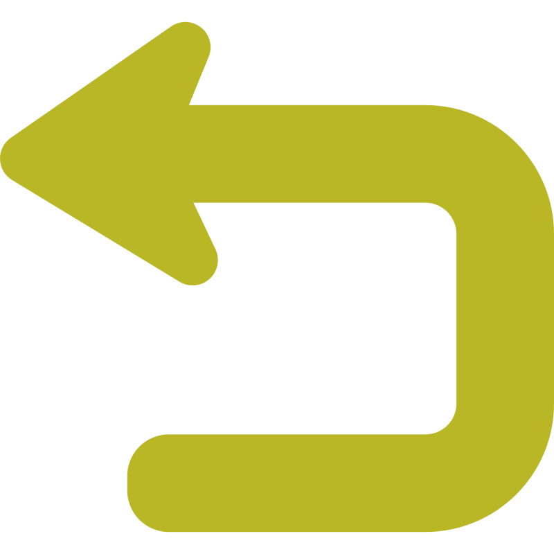

Desarrollo Web en Entorno Servidor
DWES
2º DAW
Unidad 1
Arquitectura Web
Unidad 2
Lenguaje PHP
Unidad 3
PHP orientado a objetos
Unidad 4
PHP programación web
Unidad 5
Herramientas web
Unidad 6
PHP acceso a datos
Unidad 7
Laravel (rutas, vistas, controladores y modelo de datos)
Unidad 8
Laravel (formularios, validación servicios REST, autenticación)
